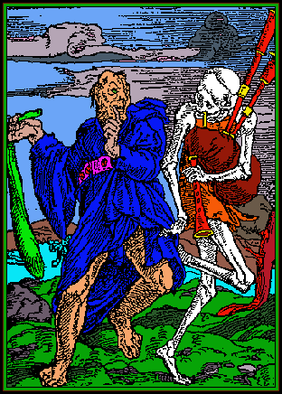

Win(d)Bag
A Great Highland bagpipe tune player, begun in BASIC on an IBM PCjr and rewritten for Windows 3.1 in Visual Basic 3 between 1995 and 2000. Tunes are typed as plain text, one bar per line, and played on the PC speaker with the melody and gracenote speeds set separately. It now runs in a browser.
The progression: BASIC → Visual Basic → Perl → Python (Claude Code) → HTML (Claude Code).

Whose work this is. Win(d)Bag, its .wbg
tune format, the practice-chanter tuning window and the Perl players are Michael
Carnright's. The Python players and the web edition (play.html) are later
ports of the same program, written with Claude Code. The colouring of the Holbein woodcut is his. None of the tunes are his: they are
traditional or by other composers, and their .wbg transcriptions are his.
What it did
A piper learning a tune wants to hear it slowly, but bagpipe gracenotes are played as fast as the fingers allow whatever the tempo. Win(d)Bag kept the two apart: one scroll bar for the melody's pace, another for the gracenotes, and both could be moved while the tune played. The time a gracenote takes is taken from the melody note that follows it, so very slow gracenotes eat into the melody, which the original README warns about. A four-count of high-G gracenotes sets the tempo before the tune starts, and the tune can be paused, resumed or stopped.
The button images from version 0.2, from the VB3 source.
Versions
| Version | What changed |
|---|---|
| The first Win(d)Bag, early 1990s | Written in BASIC on an IBM PCjr. It is lost; no copy survives. |
| 0.2, 20 December 1995 | Changes since the first version: the separate practice-chanter program merged into the player; word buttons replaced by images; the tune list split into one index per book the tunes were transcribed from, so a new book could be added on its own. |
| 0.2, 16 September 2000 | A later build of the same version, and the source in this repository. |
| Perl players | windbag.perl plays the same files through Audio::Beep; windbag2.perl adds named embellishments, so dbc can be written for a doubling on C instead of its three gracenotes. |
| Python players (Claude Code) | A terminal player, a Tk window and a uilleann-pipe variant, for macOS. |
| Web edition, HTML (Claude Code) | Web Audio in one HTML file, with a square wave to sound like the PC speaker, the tunes built in and any .wbg file droppable on it. |
The .wbg format
A tune is a list of note, length pairs separated by commas or line breaks; spaces are ignored, so a tune can be laid out one bar per line. A length of 0 is a gracenote.
G,0,a,48,g,0,d,0,g,0,c,0,d,96
is a high-G gracenote on a low-A crotchet, then the four gracenotes of a doubling on D, then D as a minim. The original format notes give the reason for the odd-looking lengths: a whole note is 192, which is 3 × 64, so triplets come out as whole numbers too.
| Length | Note |
|---|---|
| 0 | gracenote |
| 3 | 64th |
| 6 | 32nd |
| 12 | 16th |
| 24 | 8th |
| 48 | quarter |
| 96 | half |
| 192 | whole |
| Length | Note |
|---|---|
| 9, 18, 36, 72, 144 | dotted 32nd to dotted half |
| 8 | 16th triplet |
| 16 | 8th triplet |
| 32 | quarter triplet |
| 64 | half triplet |
The nine notes of the chanter are g a b c d e f G A: low G up to
high A, with capitals for the two high notes.
Embellishment names
The later players accept names for the common embellishments, which are expanded into gracenotes before the tune is read:
| Name | Gracenotes | Embellishment |
|---|---|---|
gg tg | G · A | high-G, high-A ("top") gracenote |
bg cg dg eg fg | B · C · D · E · F | single gracenotes |
strlg strla | g · a | strike on low G, low A |
dbb dbc dbe dbf | G b d · G c d · G e f · G f G | doublings |
dbhg dbha hdbf | G f · A G · f G | doublings on high G and high A, half doubling on F |
grp | g d g | grip |
tar | g d g e | taorluath |
hvthrd | g d g c | heavy throw on D |
gstrd | G d g | G strike on D |
brl abr | g a g · a g a g | birls |
Tuning a practice chanter
Practice chanters are not all at the same pitch, so version 0.2's chanter
window lets you match the computer to yours. Set low G by ear, and every note
above it follows by fixed ratios between neighbours; then nudge each note in
turn going up. The result is saved to CHANTER.TXT.
| Step | G→A | A→B | B→C | C→D | D→E | E→F | F→G | G→A |
|---|---|---|---|---|---|---|---|---|
| Ratio | 9/8 | 9/8 | 10/9 | 27/25 | 10/9 | 10/9 | 27/25 | 10/9 |
| Hz | 412→464 | 522 | 580 | 626 | 696 | 773 | 835 | 928 |
The ratios from low A to high A multiply to exactly 2, an octave, and the
frequencies in the CHANTER.TXT that ships with the source are
this chain from a low G of 412 Hz, rounded to whole hertz at each step.
The tunes
The web edition has 93 tunes built in, every tune in the archive that uses the
embellishment names. None of them is the author's composition: they are
traditional or by other composers, and many of the settings come from pipe tutor
books. The .wbg transcriptions are his.
- Marches and airs: Brian Boru's March, The Blue Bells of Scotland, The Minstrel Boy, The Red Fox, Robin Adair, The Rowan Tree, The Star of the County Down, Will Ye No Come Back Again, The 79th's Farewell to Gibraltar, The Marquis of Huntly, The Fireman's March, Captain Horne, By the Water's Edge, Loch Ruan, The Sound of Sleat, Willie Davey, Wings, Jockball, PMCCC, First, Caprice, Los Itchy Fingers (three settings), In Memory of the Youngest Shipley, The Haunting, Twilight's Misty Forests
- Irish: Fanny Power (O'Carolan), Thady You Gander, The Eagle's Whistle, The Exile, Paddy and its four parts, and three more numbered Irish tunes
- Band sets: Garry Owen, an Irish set, Miss Kirkwood and The Children, Retreats, Scotland the Brave, The Bonny Lass of Fyvie
- From tutor book 1: The Atholl Highlanders, Blue Bonnets, Highland Laddie, The Piobaireachd of Donald Dubh, Scots Wha Hae, The 79th's Farewell to Gibraltar (a second setting), The Brown Haired Maiden, The Carles wi' the Breeks, The Earl of Mansfield, The Green Hills of Tyrol, The High Road to Gairloch, The Inverness Rant, The Piper of Drummond
- From tutor book 3: A Man's a Man for a' That, Dorrator Bridge, Gille Chaluim, Johnnie Cope, Killiecrankie, Lady Louden, Mrs MacDonald of Dunach, My Home, Scotland the Brave, Seann Truibhas, The Skye Boat Song, The Crusaders' March, The Devil in the Kitchen, The Flowers of the Forest, The Rejected Suitor, The Thistle of Scotland, Willie Gray's Farewell to the Glasgow Police
- HCA: twelve tunes numbered
hca001tohca010, withhca004aandhca006a - Exercises: two short practice exercises, numbers 49 and 50
- Others: The Duke of Atholl's Salute (piobaireachd), the
Epitaph of Seikilos (the oldest surviving complete piece of music, set for the chanter: the stone's scale, moved to end on low A, is A B C D E F♯ G A, so the pipes are one note out, playing C♯ for C; the uilleann version in
uwbg/matches it exactly) - Demos: a chanter scale, and a sampler of the embellishment names above
The tune files are in tunes/. To add one, put a .wbg
in tunes/ and run python3 bundle_tunes.py, which rebuilds
the list built into play.html. Or just drop the file on the page.
In this repository
play.html | the web edition; play.html?test runs its parser tests |
vb3/ | the Visual Basic 3 source of version 0.2: forms, modules, project file, button images, the format notes and the original READMEs |
perl/ | the Perl players and their chanter and four-count files |
python/ | the Python players: a terminal player and a Tk window that play tunes/, embellishment names included, and a uilleann-pipe variant with its own .uwbg format |
uwbg/ | three traditional tunes for the uilleann player: Òró Sé do Bheatha Bhaile, a lament and the Epitaph of Seikilos (python3 python/uilleann_play.py lament) |
tunes/, bundle_tunes.py | the tunes, and the script that builds them into the page |
The Visual Basic runtime and the custom controls the program needs
(VBRUN300.DLL, CMDIALOG.VBX, THREED.VBX,
WINSOUND.DLL) are not included; they were never the author's to share.